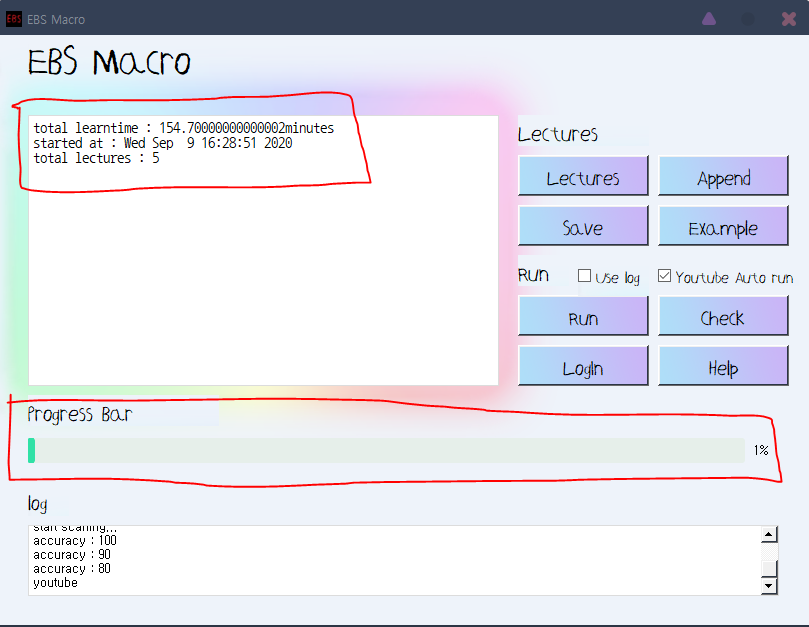

1. 텍스트박스 >>>  에 적혀있는 강의, 시간 목록을 Save 혹은 Append해서 목록을 추가함
에 적혀있는 강의, 시간 목록을 Save 혹은 Append해서 목록을 추가함
※링크와 시간을 적을 때에는 Example 형식처럼 "강의링크 (한줄 띄움) 강의시간 (한줄 띄움) 강의링크 (한줄 띄움) 강의 시간..."식으로 적음
강의 시간을 적을 때에는 "분" 단위로 적음
이 때 강의 시간보다 살짝 올려서 적음 (강의가 1:30면 2, 1:00:00이면 61, 0:40이면 1로 표기)
시간을 적을 때에는 "전체 시간"이 아닌 "남은 시간"을 적어도 됨 (전체 시간의 70%만 듣고 자동으로 넘어가짐)※
2. LogIn 버튼을 누르고 학교선택 -> 로그인
3. Run 버튼을 누르고 "컴퓨터에서 손 떼기"
창은 전체화로 해야함

진행도 등은 textbox와 Progress bar 참고